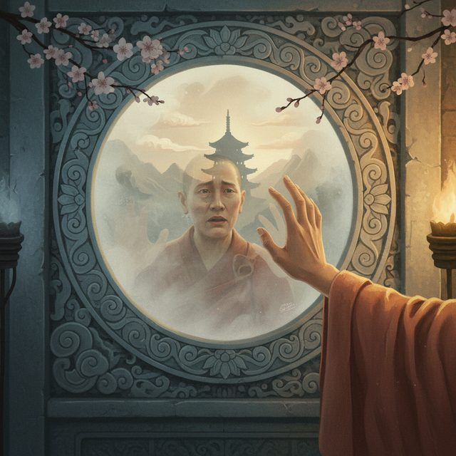
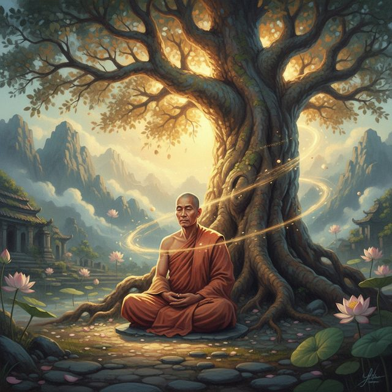
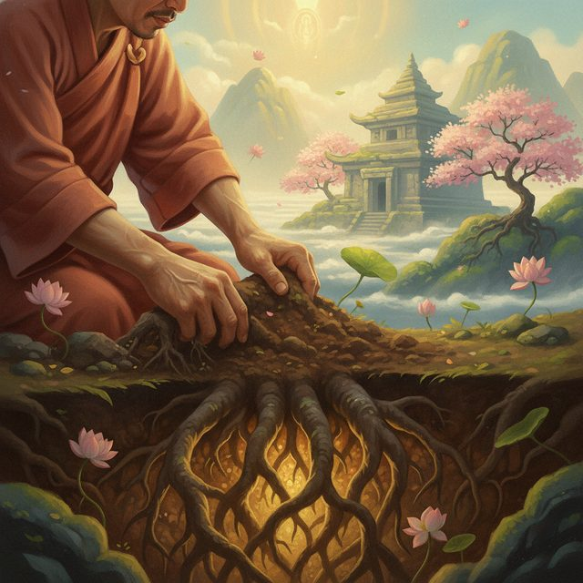
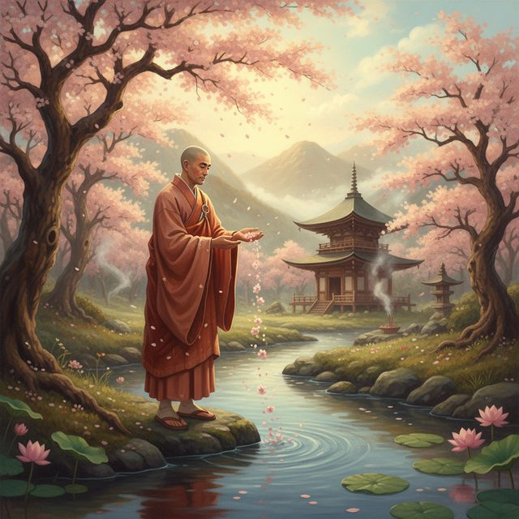
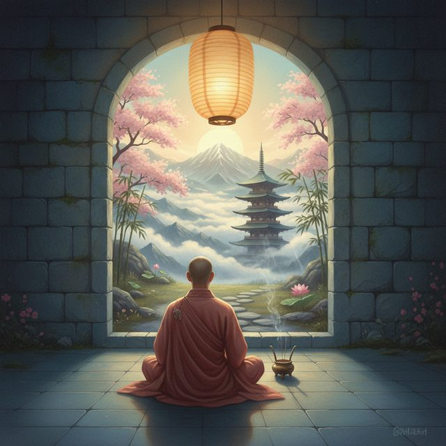
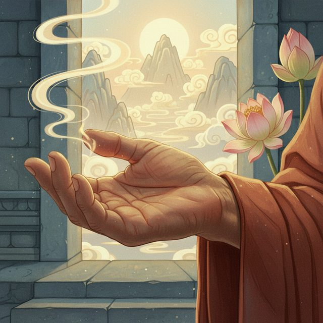
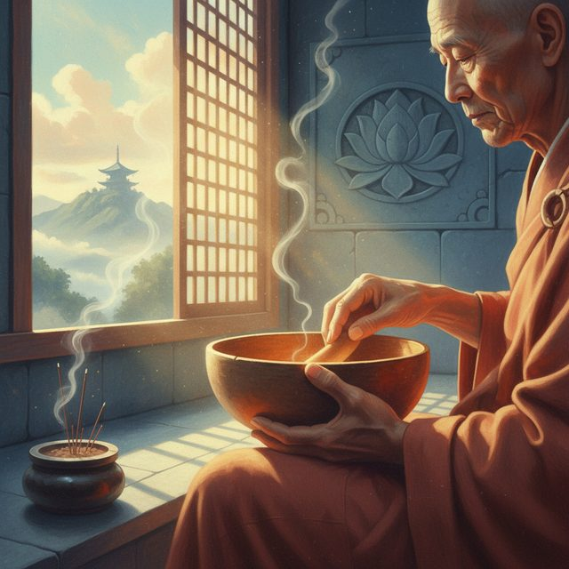

CH12-016 — images
【思考】考えすぎで疲れる｜思考を切るスイッチ
ep
CH12
Script Viewer
snapshot
guide
台本
音声
サムネ
画像
CH12-016
画像
updated_at: 2026-01-13T11:01:50.708525Z
run_id:
CH12-016

CH12-016
夜の思考が騒がしい
CH12-016
止めようとするほど強まる
CH12-016
シロクマ効果の実験
CH12-016
思考は自然、巻き込まれが問題
CH12-016
執着が思考を縛る
CH12-016
湖の葉を沈めようとして濁る
CH12-016
思考と格闘が心を消耗させる
CH12-016
敵視と抵抗が思考を強化する
CH12-016
別の関わり方へ切り替える
CH12-016
頭の中だけで解決しない
CH12-016
輪ゴムスイッチの準備
CH12-016
はじいて気づきを戻す

CH12-016
感覚で今ここへ戻る
CH12-016
テレビ砂嵐を消すイメージ
CH12-016
思考を観るものとして扱う

CH12-016
非常口として使い静けさに気づく
CH12-016
隙間の先へ進む
CH12-016
止めず巻き込まれず、受け流す

CH12-016
観客として心の舞台を見る

CH12-016
心は湖、思考は葉
CH12-016
追い払うほど水面が濁る
CH12-016
手を出さずただ認める
CH12-016
五分だけ受け流しを試す

CH12-016
気づいたら観客席へ戻る
CH12-016
思考と自分の間に距離が生まれる
CH12-016
その場しのぎから習慣化へ

CH12-016
脳は繰り返しで学ぶ
CH12-016
儀式1: 良かったことを一つ思い出す
CH12-016
儀式2: 書き出して預ける
CH12-016
寝る前の同じタイミングで繰り返す
CH12-016
少しずつ学び始める
CH12-016
今夜の一歩: 輪ゴムを置く